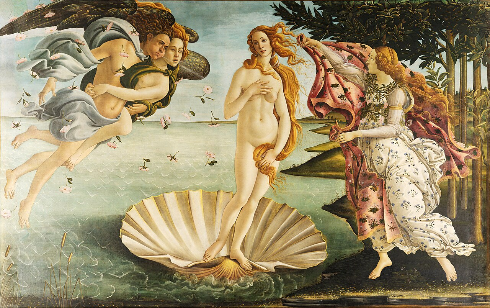
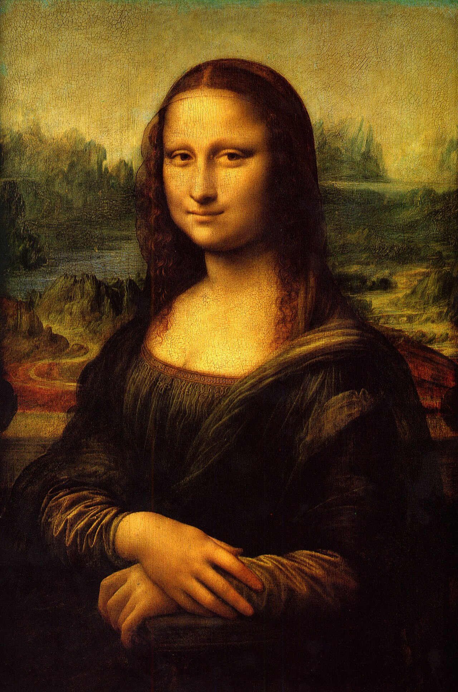
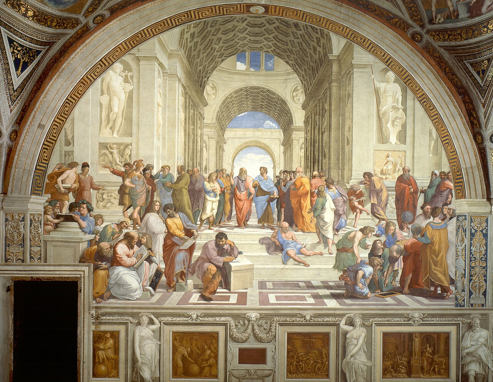
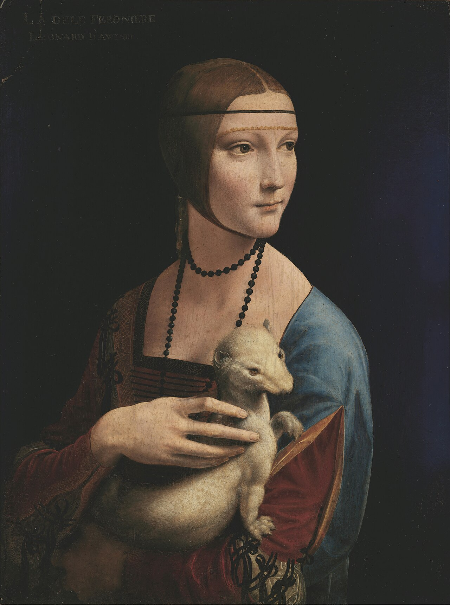

The Birth of Venus
Sandro Botticelli
1485 • Early RenaissanceA luminous revival of Classical mythology celebrating divine love and beauty as Venus lands upon Tuscan shores.
View in Collection →
By Leonardo da Vinci (Italian, 1452–1519)
Year of Creation: c. 1503–1519
| Medium | Oil on poplar panel |
|---|---|
| Dimensions | 77 cm × 53 cm (30 in × 21 in) |
| Current Collection | Musée du Louvre, Salle des États, Paris, France |
| Subject | Lisa Gherardini, wife of Florentine cloth merchant Francesco del Giocondo |
| Technique | Sfumato (smoky blending without sharp outlines) & Aerial perspective |
Narrated curatorial commentary (approx. 2 min)
Regarded as the most recognized and celebrated portrait in human history, the Mona Lisa exemplifies Leonardo da Vinci's consummate mastery of High Renaissance aesthetics. Commissioned in Florence around 1503, Leonardo carried the portrait with him across Italy and ultimately to France, continuing to refine its translucent glaze layers until his death in 1519.
The portrait is universally famed for the subject's subtle, elusive expression. Leonardo achieved this legendary optical ambiguity through sfumato, imperceptibly softening the transitions around the corners of Lisa's eyes and mouth so her expression appears to subtly shift depending upon where the viewer focuses their gaze.
Behind the sitter lies an imaginary, wild landscape of jagged mountains, winding rivers, and a distant stone bridge. Leonardo deployed atmospheric perspective—shifting tones toward muted blues as depth recedes—symbolically linking human harmony with the enduring organic forces of the natural world.
Examine peer masterpieces celebrating Florentine humanism, balance, and classicism.

Sandro Botticelli
1485 • Early RenaissanceA luminous revival of Classical mythology celebrating divine love and beauty as Venus lands upon Tuscan shores.
View in Collection →
Raphael
1509–1511 • High RenaissanceRaphael's monumental Vatican fresco celebrating philosophy, bringing Plato and Aristotle together in architectural harmony.
View in Collection →
Leonardo da Vinci
1489–1490 • High RenaissanceLeonardo's dynamic psychological portrait of Cecilia Gallerani holding a white stoat, alive with twisting contrapposto motion.
View in Collection →